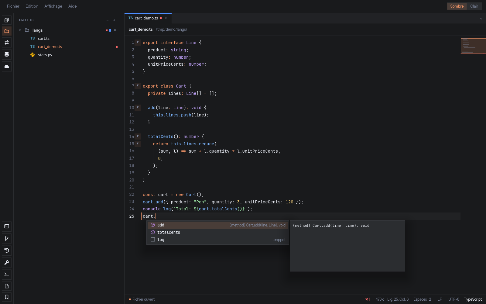
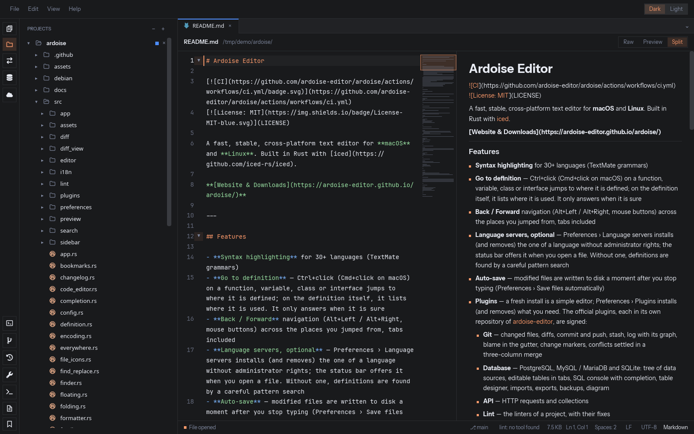

ÉditionEditing
Saisie, lignes, multi-curseurs, pliage, complétion, snippets, formatage et aperçus.Typing, lines, multiple cursors, folding, completion, snippets, formatting and previews.
SaisieTyping
Retrait automatique, fermeture automatique des parenthèses et des guillemets, largeur de tabulation et retour à la ligne se règlent dans Préférences › Éditeur (blocs Affichage, Indentation, Saisie). La barre d'état indique l'indentation du fichier (espaces ou tabulations) et prévient quand les fins de ligne sont mélangées.
Auto-indent, bracket and quote completion, tab width and word wrap are set in Preferences › Editor (Display, Indentation, Typing blocks). The status bar shows the file's indentation (spaces or tabs) and warns when line endings are mixed.
Éditer des lignesLine editing
| ActionAction | RaccourciShortcut |
|---|---|
| Dupliquer la ligneDuplicate line | Ctrl D |
| Supprimer la ligneDelete line | Ctrl Y |
| Déplacer la ligne vers le haut / le basMove line up / down | Alt Shift ↑ / Alt Shift ↓ |
| Commenter / décommenterComment / uncomment | Ctrl / |
| Aller à la ligneGo to line | Ctrl G |
Dans la palette (Ctrl+Shift+A) : trier les lignes (croissant, décroissant, sans la casse, numérique), supprimer les doublons, inverser, joindre, supprimer les espaces de fin, et convertir la casse (MAJUSCULES, minuscules, Titre, camelCase, PascalCase, snake_case, SCREAMING_SNAKE_CASE, kebab-case).
In the palette (Ctrl+Shift+A): sort lines (ascending, descending, ignore case, numeric), remove duplicate lines, reverse, join, trim trailing whitespace, and convert case (UPPERCASE, lowercase, Title Case, camelCase, PascalCase, snake_case, SCREAMING_SNAKE_CASE, kebab-case).
Dupliquer une ligne, la déplacer avec Alt+Maj+↑, commenter un bloc, puis trier des lignes depuis la palette.Duplicate a line, move it with Alt+Shift+↑, comment a block, then sort lines from the palette.
Vidéo à venirVideo to comePlusieurs curseursMultiple cursors
| ActionAction | RaccourciShortcut |
|---|---|
| Ajouter l'occurrence suivanteAdd the next occurrence | Alt J |
| Sélectionner toutes les occurrencesSelect all occurrences | Ctrl Alt Shift J |
| Ajouter un curseur au-dessus / en dessousAdd a cursor above / below | Ctrl Alt ↑ / Ctrl Alt ↓ |
Un nom de variable : Alt+J trois fois, puis le renommer partout d'un coup.A variable name: Alt+J three times, then rename them all at once.
Vidéo à venirVideo to comePliage de codeCode folding
Des chevrons dans la marge plient les blocs, les commentaires et les sections Markdown. Ctrl+. plie ou déplie le bloc courant ; le menu Affichage › Plier / Déplier plie tout ou rien.
Chevrons in the gutter fold blocks, comments and Markdown sections. Ctrl+. folds or unfolds the current block; the View › Fold / Unfold menu folds all or none.
Complétion et snippetsCompletion and snippets
- La liste de complétion s'ouvre en tapant (ou seulement au raccourci, selon Préférences › Éditeur › Complétion) ; Ctrl+Space la force, Ctrl+P montre les paramètres d'une fonction.The completion list opens as you type (or only with the shortcut, per Preferences › Editor › Completion); Ctrl+Space forces it, Ctrl+P shows a function's parameters.
- Snippets : une page à part dans les Préférences explique leur fonctionnement et comment en écrire ; chacun s'active, se désactive ou se supprime ; deux exemples sont fournis. Tab juste après le déclencheur exact insère le snippet.Snippets: a page of their own in the Preferences explains how they work and how to make one; each can be turned on or off, or deleted; two examples come with a fresh install. Tab right after the exact trigger inserts it.

La liste de complétion ouverte dans un fichier de code, avec un élément sélectionné et le résumé de ses paramètres.The completion list open in a code file, one item selected, with its parameter summary.
Capture à venirScreenshot to comeFormater le codeFormatting code
Édition › Formater le code (Ctrl+Alt+L) appelle l'outil externe du langage (prettier, rustfmt, black…) dans le dossier du fichier : la configuration du projet s'applique. Rien n'est téléchargé pour vous : l'outil doit être installé.
Edit › Format Code (Ctrl+Alt+L) calls the language's external tool (prettier, rustfmt, black…) in the file's folder, so the project's own configuration applies. Nothing is downloaded for you: the tool must be installed.
Aperçus Markdown et JSONMarkdown and JSON previews
Les fichiers Markdown et JSON proposent des modes : Brut, Aperçu, Partagé (texte et aperçu côte à côte) et, pour JSON, Arbre. Un JSON invalide est signalé ; un document trop grand est tronqué à l'affichage.
Markdown and JSON files offer modes: Raw, Preview, Split (text and preview side by side) and, for JSON, Tree. Invalid JSON is flagged; a document that is too large is truncated in display.

Un README.md en mode Partagé (texte à gauche, rendu à droite) avec les boutons de mode visibles.A README.md in Split mode (text on the left, render on the right) with the mode buttons visible.
Capture à venirScreenshot to come